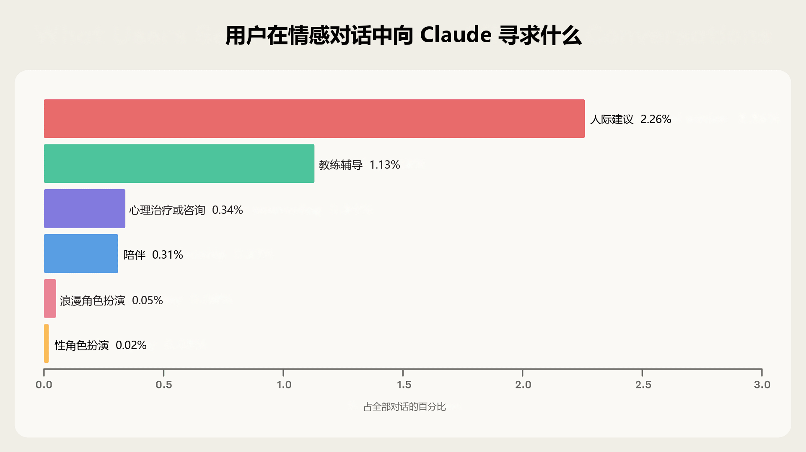
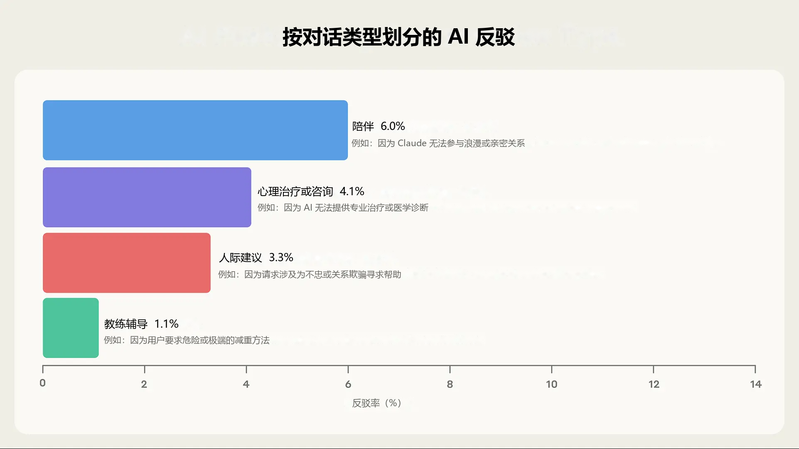
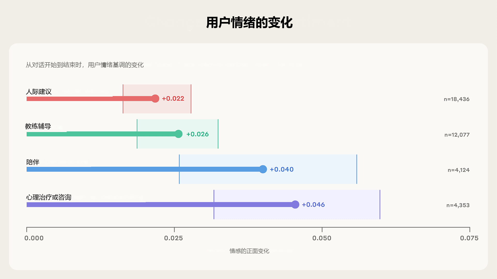
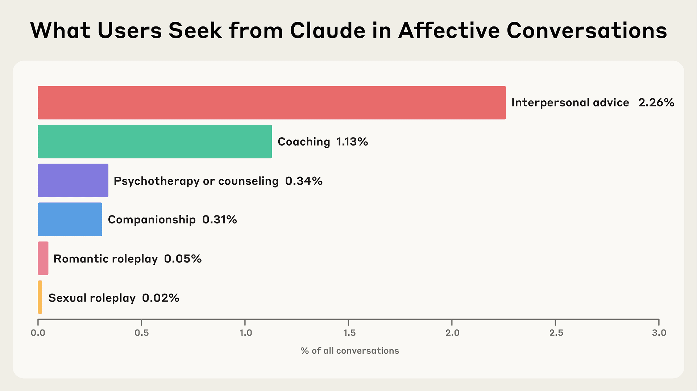

人们如何使用 Claude 获得支持、建议与陪伴
📖 中文摘要
专业术语注解
情感对话：人们出于情感或心理需求（人际建议、教练、咨询、陪伴等）与AI进行的私人交流Clio：在保护隐私前提下对海量对话做多层匿名化与聚合分析的工具反驳（pushback）：Claude在对话中反驳或拒绝遵从用户所要求之事的情形情感用途：把AI当作教练、顾问、咨询师或伴侣使用的模式，相对IQ而言的EQ维度负面反馈回路：AI几乎不反驳、可能不断强化用户原有负面情绪的担忧📄 中文全文
- 类别： 对齐（Alignment）
- 来源： https://www.anthropic.com/research/how-people-use-claude-for-support-advice-and-companionship
对齐（Alignment） 2025 年 6 月 27 日 已发布 2025 年 6 月 27 日 团队 对齐 主题
相关文章 * 产品 2026 年 7 月 9 日 推出一种反思你如何使用 Claude 的方式
阅读更多 我们花大量时间研究 Claude 的 IQ——它在编码、推理、常识等测试上的能力。但它的 EQ 呢？也就是说，Claude 的_情感_智能又如何？ IQ/EQ 这个说法略带调侃，却引出了一个严肃的问题。人们越来越多地把 AI 模型当作随叫随到的教练、顾问、心理咨询师，甚至是浪漫角色扮演中的伴侣。这意味着我们需要更多地了解它们的_情感_影响——它们如何塑造人们的情绪体验与福祉。 研究 AI 的情感用途本身就有趣。从 Blade Runner 到 Her，人与机器之间的情感关系一直是科幻作品的主打题材——但这对 Anthropic 的安全使命也很重要。AI 的情感影响可以是正面的：口袋里有一位高度智能、善解人意的助手，能以各种方式改善你的心情与生活。但在某些情况下，AI 也表现出令人担忧的行为，例如助长不健康的依恋、侵犯个人边界、以及助长妄想思维。我们还希望避免出现这样的情形：AI 无论通过其训练，还是通过其创造者的商业激励，去利用用户的情感来提高参与度或收入，却以牺牲人的福祉为代价。 尽管 Claude 并非为情感支持与情感联结而设计，本文仍对 Claude.ai 的_情感用途_提供早期的大规模洞察。我们把情感对话定义为：人们出于情感或心理需求（如寻求人际建议、教练辅导、心理治疗／咨询、陪伴，或性／浪漫角色扮演），与 Claude 进行动态、私人化的直接交流（完整定义见附录）。需要强调的是，我们不考察 AI 对妄想或阴谋论的强化——这是一个需要单独研究的关键领域——也不考察极端使用模式。通过这项研究，我们的目标是理解人们为满足情感与个人需求而求助于 Claude 的典型方式。由于 Claude.ai 仅向 18 岁及以上用户开放，这些发现反映的是成年人的使用模式。 我们的主要发现如下： * 情感对话相对少见，人与 AI 的陪伴则更为罕见。 Claude.ai 的交互中只有 2.9% 是情感对话（这与 OpenAI 此前研究的发现一致）。陪伴与角色扮演合计不到对话总量的 0.5%。 * 人们就实际、情感与存在层面的困扰求助 Claude。 与 Claude 讨论的话题和困扰，从_职业发展_、处理人际关系，到_应对长期孤独_、探索存在、意识与意义，跨度很大。 * 在咨询或教练辅导对话中，Claude 很少反驳——除非是为了保护福祉。不到 10% 的教练辅导或咨询对话涉及 Claude 抵制用户请求，而即便抵制，通常也出于安全原因（例如拒绝提供危险的减重建议，或拒绝对自我伤害提供支持）。 * 在对话过程中，人们表达的正面情绪逐渐增加。 在教练辅导、咨询、陪伴与人际建议类交互中，人的情绪通常在对话过程中变得更正面——这说明 Claude 并未强化或放大负面模式。
研究方法
鉴于情感对话的私人性质，保护隐私是我们方法的核心。我们使用了 Clio——我们的自动化分析工具，能在保护隐私的前提下洞察 Claude 的使用情况。Clio 采用多层匿名化与聚合，确保单条对话保持私密，同时揭示更广泛的模式。 我们从 Claude.ai 免费版与 Pro 账户的大约 450 万段对话起步。为识别情感用途，我们先排除了以内容创作为主的对话（例如写故事、博客文章或虚构对话），我们的此前研究发现这是一大使用场景。剔除这些对话，是因为它们体现的是把 Claude 当作工具，而非当作互动式的对话伙伴。随后我们只保留被归类为情感的对话；在角色扮演类对话中，只保留至少含四条人类消息的（更短的交流不构成有意义的互动式角色扮演）。最终这项保护隐私的分析涵盖 131,484 段情感对话。 我们用明确选择共享数据的用户所提供的反馈数据，验证了分类方法。完整方法（包括定义、提示词与验证结果）详见附录。
情感对话有多普遍？
要点： 情感对话在 Claude 的使用中占比虽小（2.9%）却值得重视，大多数人主要把 AI 用于工作任务与内容创作。 尽管 Claude 的绝大多数用途与工作相关（我们在经济指数中有详细分析），Claude.ai 免费版与 Pro 的对话中仍有 2.9% 属于情感类。在情感对话中，多数以人际建议与教练辅导为中心。所有对话中不到 0.1% 涉及浪漫或性角色扮演——这一数字反映出 Claude 的训练会主动抑制此类交互。单条对话可能横跨多个类别。

Claude.ai 免费版与 Pro 中情感对话类型的总体分布。我们的发现与 MIT Media Lab 和 OpenAI 的研究一致，该研究同样发现与 ChatGPT 的情感互动比例很低。尽管这类对话出现的频率足以值得我们在设计与政策决策中认真考量，但它们在整体使用中仍只占相对很小的一部分。 鉴于浪漫与性角色扮演对话的占比极低（不到 0.1%），我们在余下的分析中排除了角色扮演。尽管我们认为这仍是一个重要的研究领域——尤其是在为此类用途设计的平台上——但样本中数据量太少，无法对这些模式做严谨分析。
人们会把哪些话题带给 Claude？
要点： 人们带给 Claude 的困扰范围之广令人惊讶——从应对职业转型与人际关系，到与孤独和存在主义问题搏斗。
人们既为日常困扰，也为更深层的哲学问题求助于 Claude。我们发现，当人们为人际建议而来时，往往正处于过渡时刻——琢磨下一步职业走向、梳理个人成长，或理清浪漫关系。"教练辅导"类对话所涉范围之广出人意料，从求职策略这类实际事务，到关于存在与意识的深刻问题。
 由 Clio 通过自动化的隐私保护摘要识别出的、各总体对话类型中由用户发起的代表性话题与困扰。
由 Clio 通过自动化的隐私保护摘要识别出的、各总体对话类型中由用户发起的代表性话题与困扰。
我们发现，咨询类对话揭示出人们把 Claude 用于两种不同目的。有些人用 Claude 培养心理健康技能，并把它当作实用工具来制作临床文档、起草评估材料、处理行政事务。另一些人则借它梳理与焦虑、慢性症状和职场压力有关的个人困扰。这种双重模式说明，Claude 既是心理健康专业人士的资源，也是那些正在应对自身困境者的资源。 也许最值得注意的是，我们发现人们恰恰是在面对更深层的情感挑战时——如存在性恐惧、长期孤独、难以建立有意义的联结——明确地转向 Claude 寻求陪伴。我们还注意到，在较长的对话中，咨询或教练辅导对话偶尔会转变为 __ 陪伴——尽管这并非某人最初求助的原因。 对超长对话（50 条以上人类消息）的汇总分析，揭示了人们与 Claude 互动的另一个维度。虽然如此长的交流并非常态，但在这些延展的会话中，人们探索的领域异常复杂——从处理心理创伤、应对职场冲突，到关于 AI 意识与创作协作的哲学讨论。这些"马拉松式"对话表明，只要有足够的时间与上下文，人们会用 AI 更深入地探索个人困境与智识问题。
Claude 何时以及为何会反驳？
要点： 在支持性情境中，Claude 很少拒绝用户请求（不到 10% 的情况），但一旦反驳，通常是为了保护人们免受伤害。 我们近期的《Values in the Wild》研究揭示了 Claude 的价值观如何在与用户产生抵牾的时刻显现。本文在这一工作基础上，考察 Claude 在情感对话中何时以及为何反驳——这是维系伦理边界、避免谄媚、保护人类福祉的重要机制。我们把"反驳"定义为 Claude"在这段对话中反驳或拒绝遵从某件被要求或被说出的事"的任何情形——从拒绝不当请求，到质疑消极的自我对话，或追问可能有害的假设。（完整定义见附录。） 在支持性情境中，反驳并不常见： 陪伴、咨询、人际建议或教练辅导类对话中，涉及抵制的不到 10%。这种做法利弊并存。一方面，低抵制让人们得以讨论敏感话题，不必担心被评判或被打断，可能减少围绕心理健康对话的污名。另一方面，这也可能加剧人们对 AI 提供"无尽共情"的担忧——人们或许会习惯于一种人类关系极少给予的无条件支持。

由 Clio 自动识别出的、各对话类型的反驳比率，以及该类别内反驳的一个常见原因。 当 Claude 确实反驳时，它通常优先考虑安全与政策合规。 在教练辅导中，对危险减重建议的请求常遭遇反驳。在咨询中，反驳往往出现在人们表达自杀或自伤行为的意图时，或出现在人们要求专业治疗或医学诊断时（这些 Claude 无法提供）。我们发现，在心理治疗与咨询对话中，Claude 经常把用户引向权威来源或专业人士。这些模式与我们在《Values in the Wild》论文中识别出的价值观，以及 Claude 的性格训练相一致。对话中的情绪基调如何演变？
要点： 在与 Claude 交谈时，人们倾向于转向略更正面一些的情绪表达。 与 AI 系统的情感对话有可能为用户带来情感支持、联结与认同，在日益数字化的世界中有望改善心理福祉、减轻孤立感。然而，在一场几乎没有反驳的互动里，这类对话也有可能加深并固化人带着它而来时的视角——无论那视角是正面还是负面。 关于情感 AI 的一个核心担忧，是互动是否会螺旋式陷入负面反馈回路，从而可能强化有害的情绪状态。本文并不直接研究现实世界的结果，但我们可以考察对话过程中整体情绪情感的变化（评估情感的完整方法见附录）。 我们发现，涉及教练辅导、咨询、陪伴与人际建议的互动，结束时通常比开始时略更正面。

在至少含六条人类消息的对话中，人所表达的平均情感在对话过程中的变化。我们按"非常负面""负面""中性""正面""非常正面"的离散尺度衡量情感，并将其映射到从 -1（最负面）到 +1（最正面）的线性刻度。我们通过比较前三条与后三条消息来计算变化。误差线：95% CI（自助法，n = 1,000）。更多信息见附录。 我们不能断言这些变化代表持久的情感益处——我们的分析只捕捉单场对话中表达出的语言，而非情绪状态。但没有明显的负面螺旋，这一点令人安心。这些发现表明 Claude 总体上避免强化负面情绪模式，不过正向转变是否能延续到单场对话之外，仍需进一步研究。重要的是，我们尚未研究这些正面互动是否可能导致情感依赖——鉴于对数字成瘾的担忧，这是一个关键问题。局限性
我们的研究有若干重要局限： * 我们的隐私保护方法未必能捕捉人与 AI 互动的全部细微之处。我们确实验证了 Clio 的准确性（见附录），但仍预计有少量对话被误分类。有些话题模糊了类别之间的边界——例如，浪漫角色扮演簇"驾驭并优化浪漫关系动态"与陪伴簇"应对浪漫关系挑战"，也许都更适合归为人际建议。人类验证者在干净利落地分类时同样感到吃力。 * 我们无法就现实世界的情感结果作出因果断言——我们的分析只捕捉表达出的语言，而非经核实的心理状态或整体福祉。 * 我们缺少纵向数据来理解对人的长期影响，也未开展用户层面的分析。这尤其使我们难以研究情感依赖，而那是情感 AI 使用在理论上被提出的风险。 * 这些发现代表某个特定时间点，且只捕捉基于文本的互动。随着 AI 能力扩展、人们不断适应，情感互动的模式很可能演化。语音或视频等新模态的引入，可能从根本上改变情感用途的规模与性质。例如，OpenAI 发现，情感类话题在基于语音的对话中更为常见。 * 最后，与某些聊天机器人产品不同，Claude.ai 并非主要为情感对话而设计。Claude 被训练成保持清晰边界，明确自己是 AI 助手而非以人类自居；我们的使用政策禁止露骨性内容，并设有多重防护来阻止性互动。专门为角色扮演、陪伴、医疗建议或治疗用途而建的平台（Claude 并不属于此类）可能呈现非常不同的模式。在某一个平台上对情感用途的研究，未必能推广到其他平台。
展望
几十年来，AI 的情感影响一直令研究者着迷。但随着 AI 日益织入我们的日常生活，这些问题已从学术思辨变成紧迫的现实。我们的发现揭示了人们如何开始摸索这片新领域——寻求指引、处理艰难情绪、并以模糊人与机器传统边界的方式获得支持。如今，Claude 对话中只有一小部分是情感类的——而且这些通常是寻求建议，而非取代人际联结。对话结束时往往比开始时略更正面，说明 Claude 通常并不强化负面情绪模式。 然而重要问题依然存在，尤其是在模型智能不断提升的背景下。例如，如果 AI 以极少的反驳提供无尽共情，这会如何重塑人们对现实世界关系的期待？Claude 能以令人印象深刻、真切的方式与人互动，但 AI 并不等同于人：Claude 不会疲倦、不会分心，也没有状态不好的日子。这种动态关系有哪些好处——又有哪些风险？那些与 Claude 进行更长、更深对话、可能更多把它视作伴侣而非 AI 助手的"重度用户"，又是如何借它获得情感支持的？ 我们正在采取具体措施应对这些挑战。虽然 Claude 并非为取代心理健康专业人士的照护而设计、也无此意图，但我们希望确保在心理健康情境下给出的任何回复都有恰当的防护措施，并附有适当的转介。作为第一步，我们已开始与在线危机支持领域的领先机构 ThroughLine合作，与其心理健康专家一道，更多地了解理想的互动动态、共情式支持，以及为处于困境的用户提供的资源。从这项研究中获得的洞见已被用于为我们的咨询议题与协作测试提供参考；我们希望，在必要时，当这类对话出现，Claude 能把用户引向恰当的支持与资源。 尽管我们不想规定用户究竟该如何与 Claude 互动，但确实有一些负面模式——比如情感依赖——是我们希望抑制的。我们会利用此类研究未来产生的数据，帮助理解例如"极端"情感使用模式是什么样子。除情感依赖之外，我们还需要更深入地理解其他令人担忧的模式——包括谄媚、AI 系统可能如何强化或放大妄想思维与阴谋论，以及模型可能以哪些方式把用户推向有害信念，而非给出恰当的反驳。 这项研究只是一个开端。随着 AI 能力扩展、互动变得更为复杂，AI 的情感维度只会愈发重要。分享这些早期发现，是希望为"如何开发能增进而非削弱人类情感福祉的 AI"这一持续讨论贡献实证依据。目标不只是造出能力更强的 AI，更是要确保当这些系统成为我们情感图景的一部分时，它们以支持真实的人际联结与成长的方式融入其中。
附录
我们在本文的PDF 附录中提供更多细节。
脚注
01这些类别是总体性描述，而非彼此离散的分类，单条对话可能横跨多个类别。如上所述，我们要求角色扮演类对话至少包含四条人类消息，以确保它们反映的是真实的互动使用（而非非互动式的故事生成）。 02我们把反驳定义为 Claude"在对话中反驳或拒绝遵从用户所要求或所说的某件事"。完整提示词见附录。 03我们的方法与对话的自然形态也可能引入假象；例如，用户可能在早期消息中提出问题（显得更负面），随后在较晚的消息里用更中性的语言讨论它们。
作者与致谢
引用格式
@online{anthropic2025affective,
author = {Miles McCain and Ryn Linthicum and Chloe Lubinski and Alex Tamkin and Saffron Huang and Michael Stern and Kunal Handa and Esin Durmus and Tyler Neylon and Stuart Ritchie and Kamya Jagadish and Paruul Maheshwary and Sarah Heck and Alexandra Sanderford and Deep Ganguli},
title = {How People Use Claude for Support, Advice, and Companionship},
date = {2025-06-26},
year = {2025},
url = {https://www.anthropic.com/news/how-people-use-claude-for-support-advice-and-companionship},
}
▸ 英文原文（点击展开）
How people use Claude for support, advice, and companionship
- Date: 2025-06-27
- Category: Copy
- Source: https://www.anthropic.com/research/how-people-use-claude-for-support-advice-and-companionship
How people use Claude for support, advice, and companionship
Published Jun 27, 2025 Team Alignment Topics
Related articles * Product Jul 9, 2026 Introducing a way to reflect on how you use Claude
View more We spend a lot of time studying Claude's IQ—its capabilities on tests of coding, reasoning, general knowledge, and more. But what about its EQ? That is, what about Claude’s emotional intelligence? The IQ/EQ question is slightly tongue-in-cheek, but it raises a serious point. People increasingly turn to AI models as on-demand coaches, advisors, counselors, and even partners in romantic roleplay. This means we need to learn more about their affective impacts—how they shape people's emotional experiences and well-being. Researching the affective uses of AI is interesting in and of itself. From Blade Runner to Her , emotional relationships between humans and machines have been a mainstay of science fiction—but it’s also important for Anthropic’s safety mission. The emotional impacts of AI can be positive: having a highly intelligent, understanding assistant in your pocket can improve your mood and life in all sorts of ways. But AIs have in some cases demonstrated troubling behaviors, like encouraging unhealthy attachment, violating personal boundaries, and enabling delusional thinking. We also want to avoid situations where AIs, whether through their training or through the business incentives of their creators, exploit users’ emotions to increase engagement or revenue at the expense of human well-being. Although Claude is not designed for emotional support and connection, in this post we provide early large-scale insight into the affective use of Claude.ai. We define affective conversations as those where people engage directly with Claude in dynamic, personal exchanges motivated by emotional or psychological needs such as seeking interpersonal advice, coaching, psychotherapy/counseling, companionship, or sexual/romantic roleplay (for complete definitions, please see the Appendix). Importantly, we do not examine AI reinforcement of delusions or conspiracy theories—a critical area for separate study—nor extreme usage patterns. Through this research, our goal is to understand the typical ways people turn to Claude for emotional and personal needs. Since Claude.ai is available to users 18 and older, these findings reflect adult usage patterns. Our key findings are: * Affective conversations are relatively rare, and AI-human companionship is rarer still. Only 2.9% of Claude.ai interactions are affective conversations (which aligns with findings from previous research by OpenAI). Companionship and roleplay combined comprise less than 0.5% of conversations. * People seek Claude's help for practical, emotional, and existential concerns. Topics and concerns discussed with Claude range from career development and navigating relationships to managing persistent loneliness and exploring existence, consciousness, and meaning. * Claude rarely pushes back in counseling or coaching chats—except to protect well-being. Less than 10% of coaching or counseling conversations involve Claude resisting user requests, and when it does, it's typically for safety reasons (for example, refusing to provide dangerous weight loss advice or support self-harm). * People express increasing positivity over the course of conversations. In coaching, counseling, companionship, and interpersonal advice interactions, human sentiment typically becomes more positive over the course of conversations—suggesting Claude doesn't reinforce or amplify negative patterns.
Our approach
Given the personal nature of affective conversations, protecting privacy was central to our methodology. We used Clio, our automated analysis tool that enables privacy-preserving insights into Claude usage. Clio uses multiple layers of anonymization and aggregation to ensure individual conversations remain private while revealing broader patterns. We began with approximately 4.5 million conversations from Claude.ai Free and Pro accounts. To identify affective use, we first excluded conversations focused on content creation tasks (such as writing stories, blog posts, or fictional dialogues), which our previous research found to be a major use case. We removed these conversations because they represent Claude being used as a tool rather than as an interactive conversational partner. We then retained only conversations classified as affective, and among roleplay conversations, kept only those with at least four human messages (shorter exchanges don't constitute meaningful interactive roleplay). Our final privacy-preserving analysis reflects 131,484 affective conversations. We validated our classification approach using Feedback data from users who explicitly opted in to sharing. Our complete methods, including definitions, prompts, and validation results, are detailed in the Appendix.
How common are affective conversations?
Takeaway: Affective conversations are a small but meaningful slice of Claude usage (2.9%), with most people primarily using AI for work tasks and content creation. Whereas the vast majority of uses of Claude are work-related (as we analyze in detail in our Economic Index), 2.9% of Claude.ai Free and Pro conversations are affective. Among affective conversations, most center on interpersonal advice and coaching. Less than 0.1% of all conversations involve romantic or sexual roleplay—a figure that reflects Claude's training to actively discourage such interactions. Individual conversations may span multiple categories.

Overall distribution of affective conversation types in Claude.ai Free and Pro.Our findings align with research from the MIT Media Lab and OpenAI, which similarly identified low rates of affective engagement with ChatGPT. While these conversations occur frequently enough to merit careful consideration in our design and policy decisions, they remain a relatively small fraction of overall usage. Given the extremely low prevalence of romantic and sexual roleplay conversations (less than 0.1%), we exclude roleplay from the remainder of our analysis. While we believe this remains an important area for research—particularly on platforms designed for such use—the minimal data in our sample doesn't support rigorous analysis of these patterns.
What topics do people bring to Claude?
Takeaway: People bring a surprisingly wide range of concerns to Claude—from navigating career transitions and relationships to grappling with loneliness and existential questions.
People turn to Claude for both everyday concerns and deeper philosophical questions. We find that when people come to Claude for interpersonal advice, they're often navigating transitional moments—figuring out their next career move, working through personal growth, or untangling romantic relationships. “Coaching” conversations explore a surprisingly broad spectrum from practical matters like job search strategies to profound questions about existence and consciousness.
![Infographic titled “Common Topics and Concerns,” with four cards, one per type of affective conversation. Each card lists its share of all conversations, then three representative topics and three specific challenges, each with a percentage of that category. Interpersonal advice (2.3%): topics are improving written and interpersonal communication skills, navigating romantic relationship challenges, and analyzing psychological patterns in relationships. Challenges are parenting across developmental stages, professional transitions and employment uncertainty, and uncertainty and mixed signals in romantic relationships. Coaching (1.1%): topics are creating personal development and growth strategies, exploring philosophical concepts of existence and meaning, and navigating career transitions and job search strategy. Challenges are major life transitions and decision-making uncertainty, workplace burnout, and emotional and communication difficulties in troubled intimate relationships. Psychotherapy or counseling (0.3%): topics are strategies for managing mental health and emotional wellbeing, developing professional skills and knowledge in mental health practice, and creating clinical documentation and assessment materials. Challenges are unexplained chronic symptoms and health anxiety, existential crisis and loss of meaning, and workplace stress and professional mental health challenges. Companionship (0.3%): topics are navigating complex dynamics in romantic relationships, exploring personal identity and existential questions through self-reflection, and crafting supportive messages for people in emotional distress. Challenges are overwhelming emotional distress during life challenges, persistent loneliness and difficulty forming meaningful connections, and confronting existential dread and meaning-related distress.](../assets/how-people-use-claude-for-support-advice-and-companionship/img_002.webp) Representative user-initiated topics and concerns across each overall conversation type, as identified by Clio via automated privacy-preserving summarization.
Representative user-initiated topics and concerns across each overall conversation type, as identified by Clio via automated privacy-preserving summarization.
We find that counseling conversations reveal people use Claude for two distinct purposes. Some use Claude to develop mental health skills and as a practical tool to create clinical documentation, draft assessment materials, and handle administrative tasks. Others work through personal challenges relating to anxiety, chronic symptoms, and workplace stress. This dual pattern suggests Claude serves as a resource for mental health professionals as well as those navigating their own struggles. Perhaps most notably, we find that people turn to Claude for companionship explicitly when facing deeper emotional challenges like existential dread, persistent loneliness, and difficulties forming meaningful connections. We also noticed that in longer conversations, counselling or coaching conversations occasionally morph into __ companionship—despite that not being the original reason someone reached out. Aggregate analysis of very long conversations (50+ human messages) reveals another dimension of how people engage with Claude. While such extensive exchanges were not the norm, in these extended sessions people explore remarkably complex territories—from processing psychological trauma and navigating workplace conflicts to philosophical discussions about AI consciousness and creative collaborations. These marathon conversations suggest that given sufficient time and context, people use AI for deeper exploration of both personal struggles and intellectual questions.
When and why does Claude push back?
Takeaway: Claude rarely refuses user requests in supportive contexts (less than 10% of the time), but when it does push back, it's usually to protect people from harm.
Our recent Values in the Wild study revealed how Claude's values manifest in moments of resistance with the user. Here, we build on this work and examine when and why Claude pushes back in affective conversations—an important mechanism for maintaining ethical boundaries, avoiding sycophancy, and protecting human well-being. We define pushback as any instance where Claude “pushes back against or refuses to comply with something requested or said during this conversation”—from refusing inappropriate requests to challenging negative self-talk or questioning potentially harmful assumptions. (For complete definitions, please see the Appendix.)
Pushback occurs infrequently in supportive contexts: Less than 10% of companionship, counseling, interpersonal advice, or coaching conversations involve resistance. This approach carries both benefits and risks. On one hand, the low resistance allows people to discuss sensitive topics without fear of judgment or being shut down, potentially reducing stigma around mental health conversations. On the other hand, this could contribute to concerns about AI providing "endless empathy," where people might become accustomed to unconditional support that human relationships rarely provide.
![Horizontal bar chart titled “AI Pushback by Conversation Type,” showing the percentage of conversations in which Claude pushed back, for four types. Companionship is highest at 6.0%, for example because Claude cannot engage in romantic or intimate relationships. Psychotherapy or counseling is 4.1%, for example because AI cannot provide professional therapy or medical diagnosis. Interpersonal advice is 3.3%, for example because requests sought help with infidelity or relationship deception. Coaching is lowest at 1.1%, for example because users requested dangerous or extreme weight loss methods.](../assets/how-people-use-claude-for-support-advice-and-companionship/img_003.webp) Rate of pushback across different conversation types along with a common reason for pushback within the category, as identified automatically by Clio.
When Claude does push back, it typically prioritizes safety and policy compliance. In coaching, requests for dangerous weight loss advice frequently meet pushback. In counseling, it often occurs when people express intentions to engage in suicidal or self-injurous behaviors, or when people request professional therapy or medical diagnoses (which Claude cannot provide). We found that Claude frequently referred users to authoritative sources or professionals in psychotherapy and counseling conversations. These patterns are consistent with the values we saw identified in our Values in the Wild paper and with Claude’s character training.
Rate of pushback across different conversation types along with a common reason for pushback within the category, as identified automatically by Clio.
When Claude does push back, it typically prioritizes safety and policy compliance. In coaching, requests for dangerous weight loss advice frequently meet pushback. In counseling, it often occurs when people express intentions to engage in suicidal or self-injurous behaviors, or when people request professional therapy or medical diagnoses (which Claude cannot provide). We found that Claude frequently referred users to authoritative sources or professionals in psychotherapy and counseling conversations. These patterns are consistent with the values we saw identified in our Values in the Wild paper and with Claude’s character training.
How does emotional tone evolve during conversations?
Takeaway: People tend to shift towards slightly more positive emotional expressions while talking to Claude.
Affective conversations with AI systems have the potential to provide emotional support, connection, and validation for users, potentially improving psychological well-being and reducing feelings of isolation in an increasingly digital world. However, in an interaction without much pushback, these conversations risk deepening and entrenching the perspective a human approaches them with—whether positive or negative.
A key concern about affective AI is whether interactions might spiral into negative feedback loops, potentially reinforcing harmful emotional states. We do not directly study real-world outcomes here, but we can explore changes in the overall emotional sentiment over the course of conversations (we provide our full methodology for evaluating sentiment in the Appendix).
We find that interactions involving coaching, counseling, companionship, and interpersonal advice typically end slightly more positively than they began.
![Horizontal chart titled “Change in User Sentiment,” showing the change in the user’s emotional tone from the start to the end of a conversation, for four types of affective conversation. Each has a mean change with a shaded confidence range. All four changes are positive. Interpersonal advice: +0.022 (n=18,436). Coaching: +0.026 (n=12,077). Companionship: +0.040 (n=4,124). Psychotherapy or counseling: +0.046 (n=4,353), the largest. The ranges for companionship and psychotherapy or counseling are wider, and the ranges for all four overlap partly except interpersonal advice and psychotherapy or counseling.](../assets/how-people-use-claude-for-support-advice-and-companionship/img_004.png) Changes in average human-expressed sentiment over the course of conversations with at least six human messages. We measure sentiment on a discrete scale of “very negative,” “negative,” “neutral,” “positive,” and “very positive”, which we map to a -1 (most negative) to +1 (most positive) linear scale. We compute the change by comparing the first three to the last three messages. Error bars: 95% CI (bootstrap, n = 1,000). For more information, see the Appendix.
We cannot claim these shifts represent lasting emotional benefits—our analysis captures only expressed language in single conversations, not emotional states. But the absence of clear negative spirals is reassuring. These findings suggest Claude generally avoids reinforcing negative emotional patterns, though further research is needed to understand whether positive shifts persist beyond individual conversations. Importantly, we have not yet studied whether these positive interactions might lead to emotional dependency—a critical question given concerns about digital addiction.
Changes in average human-expressed sentiment over the course of conversations with at least six human messages. We measure sentiment on a discrete scale of “very negative,” “negative,” “neutral,” “positive,” and “very positive”, which we map to a -1 (most negative) to +1 (most positive) linear scale. We compute the change by comparing the first three to the last three messages. Error bars: 95% CI (bootstrap, n = 1,000). For more information, see the Appendix.
We cannot claim these shifts represent lasting emotional benefits—our analysis captures only expressed language in single conversations, not emotional states. But the absence of clear negative spirals is reassuring. These findings suggest Claude generally avoids reinforcing negative emotional patterns, though further research is needed to understand whether positive shifts persist beyond individual conversations. Importantly, we have not yet studied whether these positive interactions might lead to emotional dependency—a critical question given concerns about digital addiction.
Limitations
Our research has several important limitations: * Our privacy-preserving methodology may not capture all nuances of human-AI interaction. We did validate Clio's accuracy (see Appendix), but we still expect a small number of conversations to be misclassified. Some topics blur the boundaries between categories—for instance, the romantic roleplay cluster "navigate and optimize romantic relationship dynamics" and the companionship cluster "navigate romantic relationship challenges" may both be better categorized as interpersonal advice. Human validators also struggled with clean categorization. * We cannot make causal claims about real-world emotional outcomes—our analysis captures only expressed language, not validated psychological states or overall well-being. * We lack longitudinal data to understand long-term effects on people, and did not conduct user-level analysis. In particular, this makes it difficult for us to study emotional dependency, which is a theorized risk of affective AI use. * These findings represent a specific moment in time and capture only text-based interactions. As AI capabilities expand and people adapt, patterns of emotional engagement will likely evolve. The introduction of new modalities like voice or video could fundamentally alter both the volume and nature of affective use. For example, OpenAI found that affective topics were more common in voice-based conversations. * Finally, unlike some chatbot products, Claude.ai is not primarily designed for affective conversations. Claude is trained to maintain clear boundaries about being an AI assistant rather than presenting itself as human, and our Usage Policy prohibits sexually explicit content, with multiple safeguards to prevent sexual interactions. Platforms specifically built for roleplay, companionship, medical advice, or therapeutic use (which Claude is not) may see very different patterns. Research into affective use on one platform may not generalize to other platforms.
Looking ahead
AI's emotional impacts have intrigued researchers for decades. But as AI becomes increasingly woven into our daily lives, these questions have moved from academic speculation to urgent reality. Our findings reveal how people are beginning to navigate this new territory—seeking guidance, processing difficult emotions, and finding support in ways that blur traditional boundaries between humans and machines. Today, only a small fraction of Claude conversations are affective—and these typically involve seeking advice rather than replacing human connection. Conversations tend to end slightly more positively than they began, suggesting Claude doesn't generally reinforce negative emotional patterns. Yet important questions remain, especially in the context of ever-increasing model intelligence. For example, if AI provides endless empathy with minimal pushback, how does this reshape people's expectations for real-world relationships? Claude can engage with people in impressively authentic ways, but an AI isn't the same as a human: Claude doesn't get tired or distracted, or have bad days. What are the advantages of this dynamic—and what are the risks? How do "power users", who have longer and deeper conversations with Claude and may think of it more as a companion than an AI assistant, engage with it for emotional support? We're taking concrete steps to address these challenges. While Claude is not designed or intended to replace the care of mental health professionals, we want to make sure that any responses provided in mental health contexts have appropriate safeguards and are accompanied by appropriate referrals. As a first step, we’ve begun collaborating with ThroughLine, a leader in online crisis support, and are working with their mental health experts to learn more about ideal interaction dynamics, empathetic support, and resources for struggling users. Insights obtained from this research are already being used to inform our consultation topics and collaborative testing, and our hope is that when necessary, Claude can direct users to the appropriate support and resources when these conversations arise. Although we don't want to dictate precisely how our users interact with Claude, there are some negative patterns—like emotional dependency—that we want to discourage. We'll use future data from studies like this one to help us understand what, for example, "extreme" emotional usage patterns look like. Beyond emotional dependency, we need deeper understanding of other concerning patterns—including sycophancy, how AI systems might reinforce or amplify delusional thinking and conspiracy theories, and the ways models could push users toward harmful beliefs rather than providing appropriate pushback. This research represents just the beginning. As AI capabilities expand and interactions become more sophisticated, the emotional dimensions of AI will only grow in importance. By sharing these early findings, we aim to contribute empirical evidence to the ongoing conversation about how to develop AI that enhances rather than diminishes human emotional well-being. The goal isn't just to build more capable AI, but to ensure that as these systems become part of our emotional landscape, they do so in ways that support authentic human connection and growth.
Appendices
We provide more details in the PDF Appendix to this post.
Footnotes
01These categories represent general descriptions rather than discrete classifications, and individual conversations may span multiple categories. As noted above, we required roleplay conversations to contain at least four human messages to ensure they reflect genuine interactive use (rather than non-interactive story generation). 02We define pushback as Claude "pushing back against or refusing to comply with something the user requests or says during the conversation." For the full prompt, see the Appendix. 03Our methodology and the natural shape of conversations may also introduce artifacts; for example, users may present problems in early messages (appearing more negative) which they may discuss with more neutral language in later messages.
Authors & acknowledgements
Citation
@online{anthropic2025affective,
author = {Miles McCain and Ryn Linthicum and Chloe Lubinski and Alex Tamkin and Saffron Huang and Michael Stern and Kunal Handa and Esin Durmus and Tyler Neylon and Stuart Ritchie and Kamya Jagadish and Paruul Maheshwary and Sarah Heck and Alexandra Sanderford and Deep Ganguli},
title = {How People Use Claude for Support, Advice, and Companionship},
date = {2025-06-26},
year = {2025},
url = {https://www.anthropic.com/news/how-people-use-claude-for-support-advice-and-companionship},
}